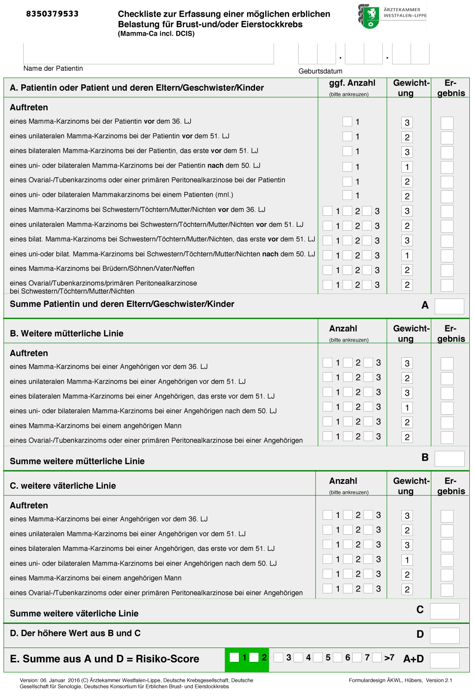

Version: 06. Januar 2016 (C) Ärztekammer Westfalen-Lippe, Deutsche Krebsgesellschaft, Deutsche Gesellschaft für Senologie, Deutsches Konsortium für Erblichen Brust- und Eierstockkrebs Formulardesign ÄKWL, Hübers, Version 2.1